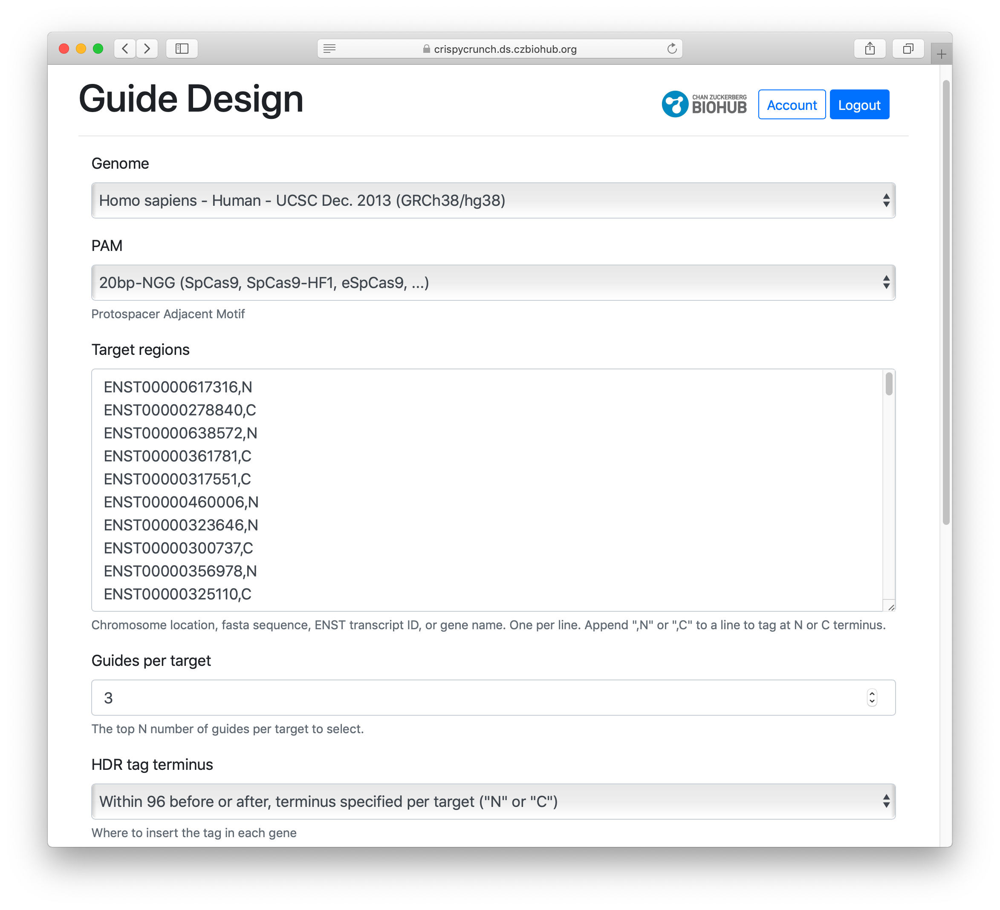
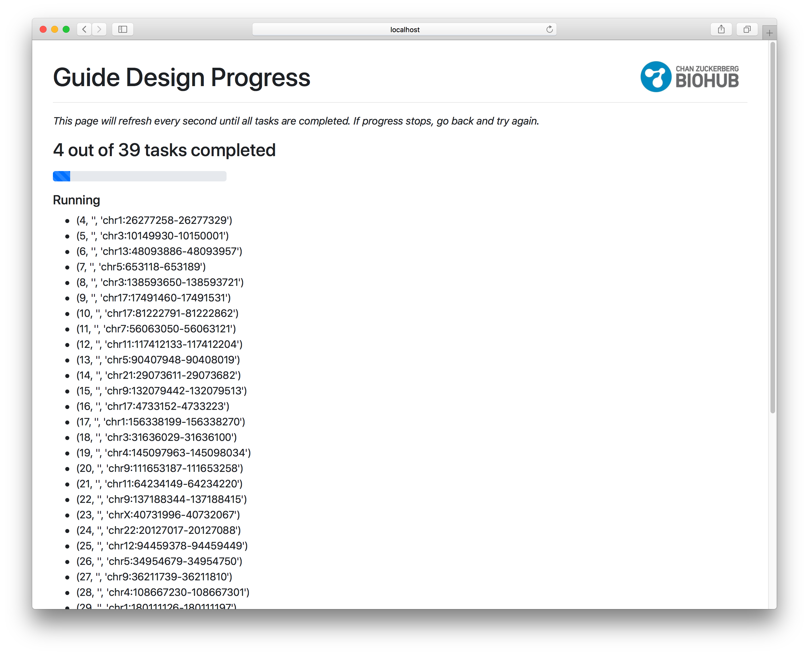
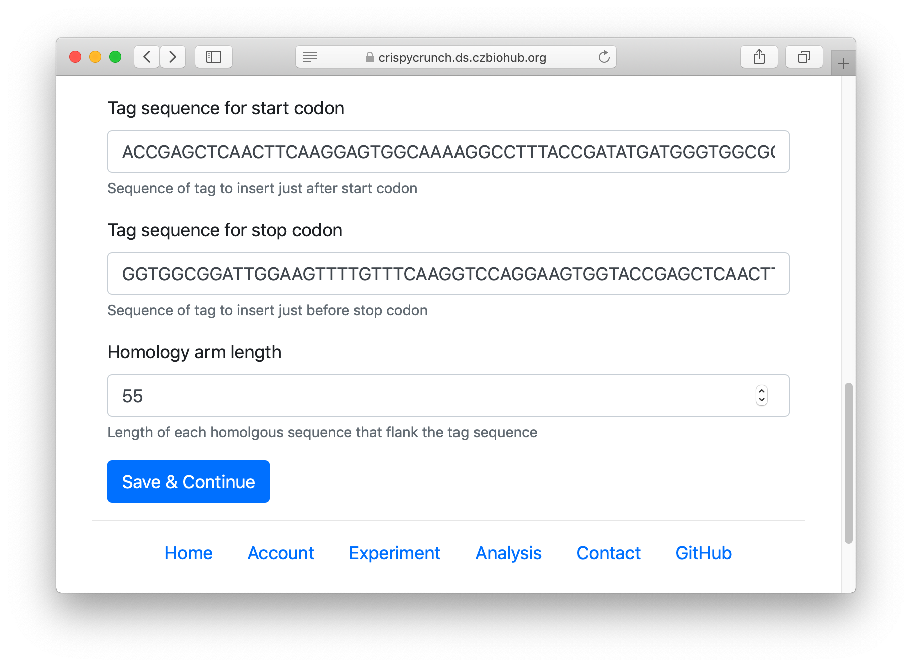
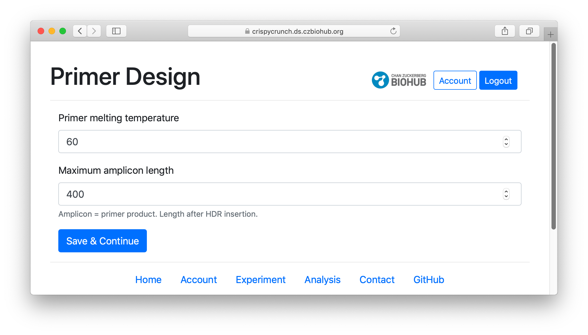
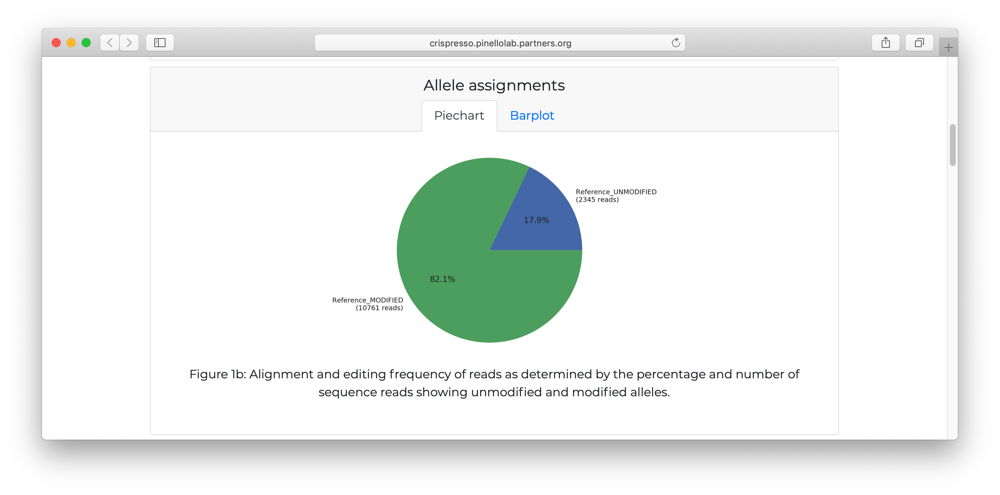
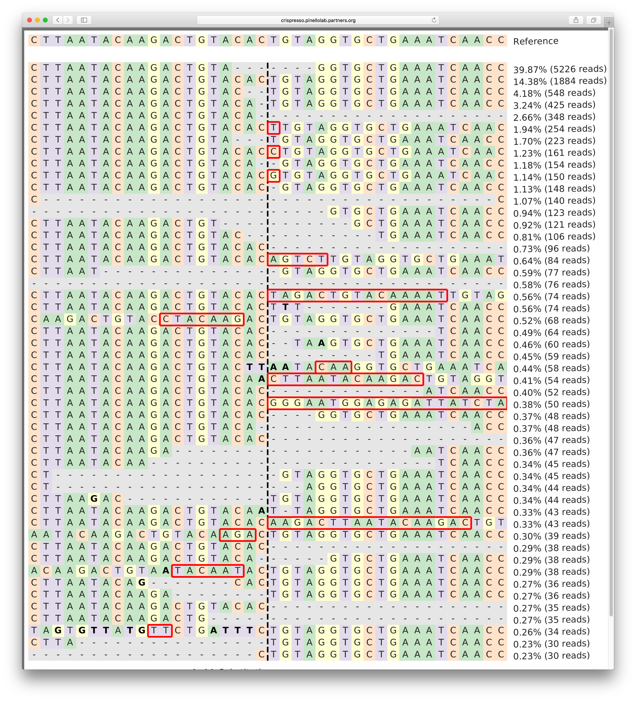

{# TODO (gdingle): fill in link to addgene post #} This guide will show you how to use CrispyCrunch to setup and analyze a CRISPR experiment. For more background, read this blog post on addgene.org.
Create a new experiment by giving it a name. This is the name CrispyCrunch will use to refer to your batch of CRISPR edits.
Design your guide RNAs by inputting the target regions (i.e. the genes you would like to edit). Targets can be input as Ensembl transcript IDs (ENSTxxx), gene names, chromosome locii, or raw FASTA sequences. Each type of input will be translated to other types for versatility.

Optionally override the default genome, guides per target and other settings.
On submission, you may need to wait up to 30 minutes as CrispyCrunch gets candidate guides for each target from Crispor. After all guides are returned, you will have a chance to review them and make modifications.

Optional: Design a donor template for insertion by HDR (Homology Directed Repair).
Inserts can be make just after the start codon or just before the stop codon of a gene. Specify a custom sequence to be inserted, and the desired length of the homolgy arms.

To verify the genomic sequence post-editing, each target locus can be PCR-amplified from genomic DNA fro deep-sequencing analysis. Specify optimal temperature and maximum amplicon length. These values are passed down to Primer3 to design PCR primers.

On submission, you may need to wait up to 10 minutes as CrispyCrunch gets primers for each guide from Crispor. After all primers are returned, you will have a chance to review them and make modifications.
On the summary page, you can see all information gathered so far, and you can download pre-filled excel order forms ready for submission to IDT or other vendors. You can order guides, primers and HDR donor templates in this way.
After a few weeks, once your reagents have arrived, the experiments are ready to be performed. Do what you know how to do!

If you'd like to characterize the targeted loci post-editing, deep sequence your cells and gather the resulting FASTQ files and upload them to a publicly accessible Amazon S3 bucket. If you don't have such an S3 bucket, please contact {{ settings.ADMIN_EMAIL }} for alternatives.
Optional: Choose the experiment you want to analyze. Upload your sequencing files to your S3 bucket if you haven't already. Point CrispyCrunch to the S3 folder that contains from sequencing files associated with the selected experiment.

CrispyCrunch will automatically identify the correct pair of FASTQ files for each sample by comparing the primers in each sequencing sample to the known primers of the experiment.
On submission, you may need to wait up to 45 minutes as CrispyCrunch sends each pair of FASTQ files to Crispresso for analysis. After all reports are returned, you will get a summary page with links to each detailed report.

Crispresso quantifies repair outcomes––both NHEJ and HDR––in a variety of ways that are useful for ensuring that your CRISPR edits occurred as expected.

